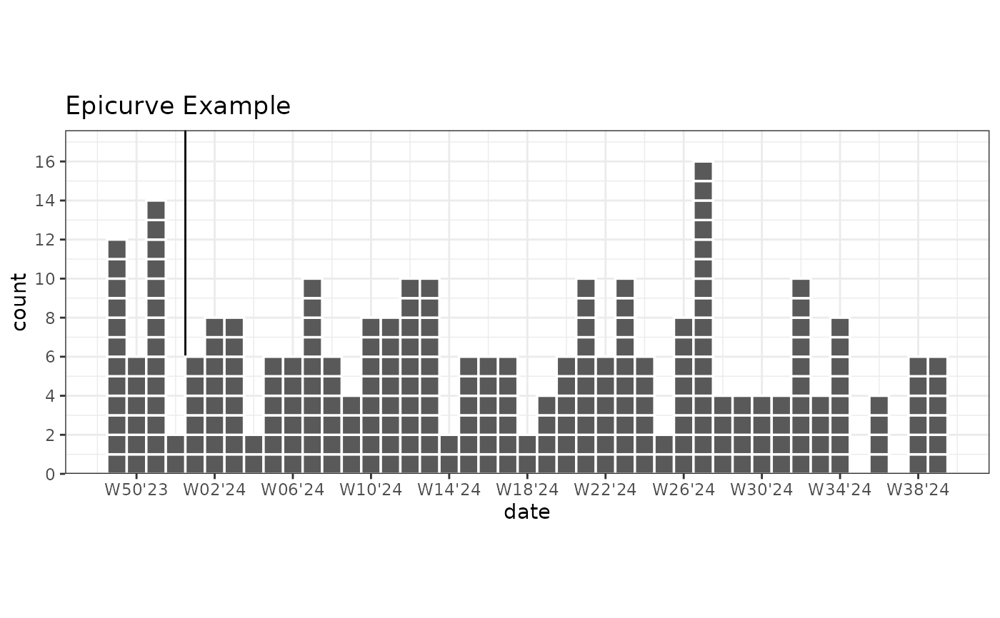
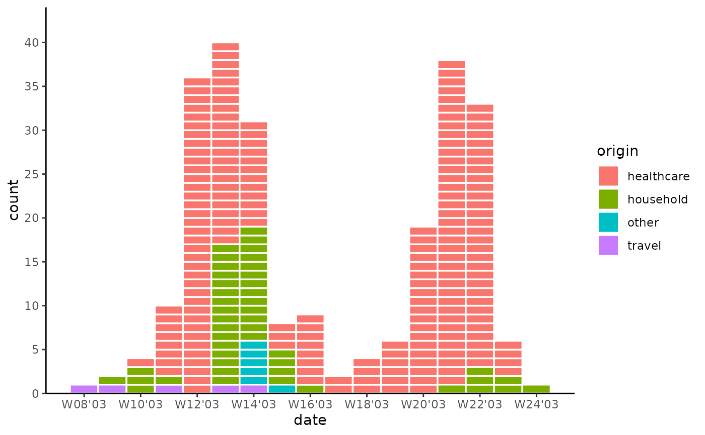

Creates a epicurve plot for visualizing epidemic case counts in outbreaks (epidemiological curves).
An epicurve is a bar plot, where every case is outlined. geom_epicurve additionally provides
date-based aggregation of cases (e.g. per week or month and many more).
For week aggregation both isoweek (World + ECDC) and epiweek (US CDC) are supported.
Usage
geom_epicurve(
mapping = NULL,
data = NULL,
stat = "epicurve",
position = "stack",
date_resolution = NULL,
width = NULL,
relative.width = 1,
week_start = getOption("lubridate.week.start", 1),
...,
na.rm = FALSE,
show.legend = NA,
inherit.aes = TRUE
)Arguments
- mapping
Set of aesthetic mappings created by
aes. Commonly used mappings:x or y: date or datetime. Numeric is technically supported.
fill: for colouring groups
weight: if data is already aggregated (e.g. case counts)
- data
The data frame containing the variables for the plot
- stat
either "
epicurve" for outlines around cases or "count" for outlines around (fill) groups. For large numbers of cases please use "count".- position
Position adjustment. Currently supports "
stack".- date_resolution
Character string specifying the time unit for date aggregation. Set to
NULLfor no date aggregation
Possible values are: "day", "week", "month", "bimonth", "season", "quarter", "halfyear", "year".- width
Numeric value specifying the width of the bars. If
NULL, calculated based on resolution and relative.width- relative.width
Numeric value between 0 and 1 adjusting the relative width of bars. Defaults to 1
- week_start
Integer specifying the start of the week (1 = Monday, 7 = Sunday).
Only used when date_resolution includes weeks. Defaults to 1 (Monday).
For isoweek useweek_start = 1and for epiweek useweek_start = 7.- ...
Other arguments passed to
layer. For example:colourColour of the outlines around cases. Disable with colour = NA. Defaults to "white".linewidthWidth of the case outlines.
- na.rm
If
FALSE, the default, missing values are removed with a warning. IfTRUE, missing values are silently removed.- show.legend
logical. Should this layer be included in the legends?
NA, the default, includes if any aesthetics are mapped.FALSEnever includes, andTRUEalways includes. It can also be a named logical vector to finely select the aesthetics to display.- inherit.aes
If
FALSE, overrides the default aesthetics, rather than combining with them. This is most useful for helper functions that define both data and aesthetics and shouldn't inherit behaviour from the default plot specification, e.g.borders().
Examples
# Basic epicurve with dates
library(ggplot2)
data <- data.frame(date = as.Date("2024-01-01") + 0:30)
ggplot(data, aes(x = date)) +
geom_epicurve(date_resolution = "week") +
scale_y_cases_5er() +
scale_x_date(date_labels = "W%V'%g") # Correct ISOWeek labels week'year

# Categorical epicurve
library(tidyr)
library(outbreaks)
sars_canada_2003 |> # SARS dataset from outbreaks
pivot_longer(starts_with("cases"), names_prefix = "cases_", names_to = "origin") |>
ggplot(aes(x = date, weight = value, fill = origin)) +
geom_epicurve(date_resolution = "week") +
scale_x_date(date_labels = "W%V'%g", date_breaks = "2 weeks") +
scale_y_cases_5er() +
theme_classic()
